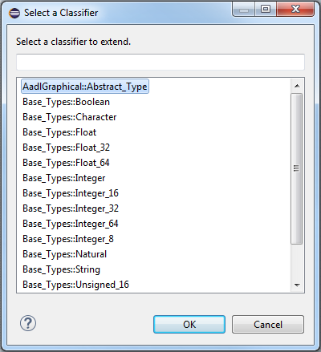

The graphical editor allows editing AADL classifiers such as component types, component implementations, and feature groups.
When viewing a package diagram, classifiers can be created by using the palette.
Open a package diagram.
Drag the appropriate classifier type from the palette onto the diagram.

If a component implementation was dropped onto the diagram, select the classifier for the implementation to implement or extend.
The editor allows classifier extensions to be specified in the package view. That is, the editor allows the specification of type extensions and implementation relationships.
While editing a package diagram, select Extension from the Palette.
Click on the classifier which will be the extension.
Click the classifier that is being extended. An arrow will now appear. The type of arrow is determined whether the extension is an implementation or type extension.
Specifying an extension using the context menu allows extending classifiers in other packages.
Right-click on the classifier which will be the extension and select Set Extended Classifier... from the context menu.
Select the classifier to extend.
Select OK. The appropriate arrow indicating the extension will appear.